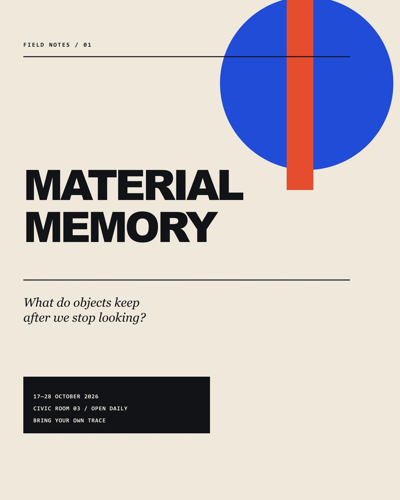
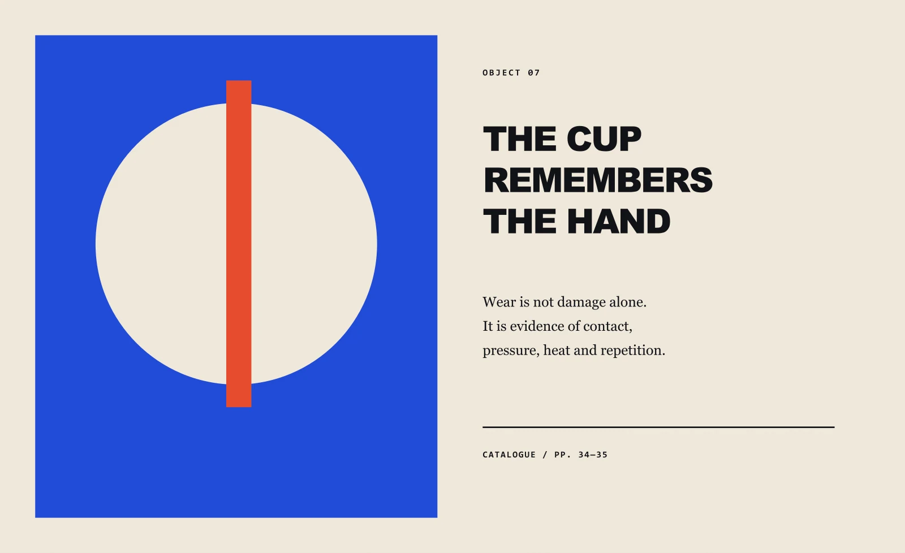
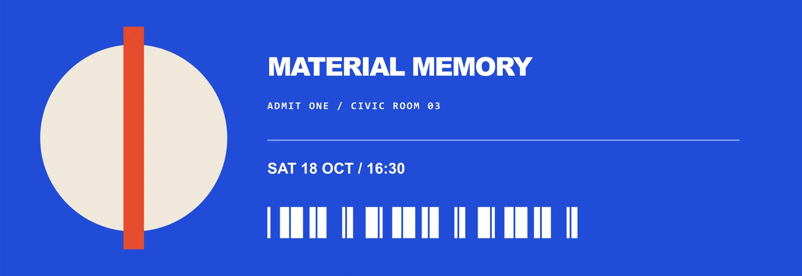
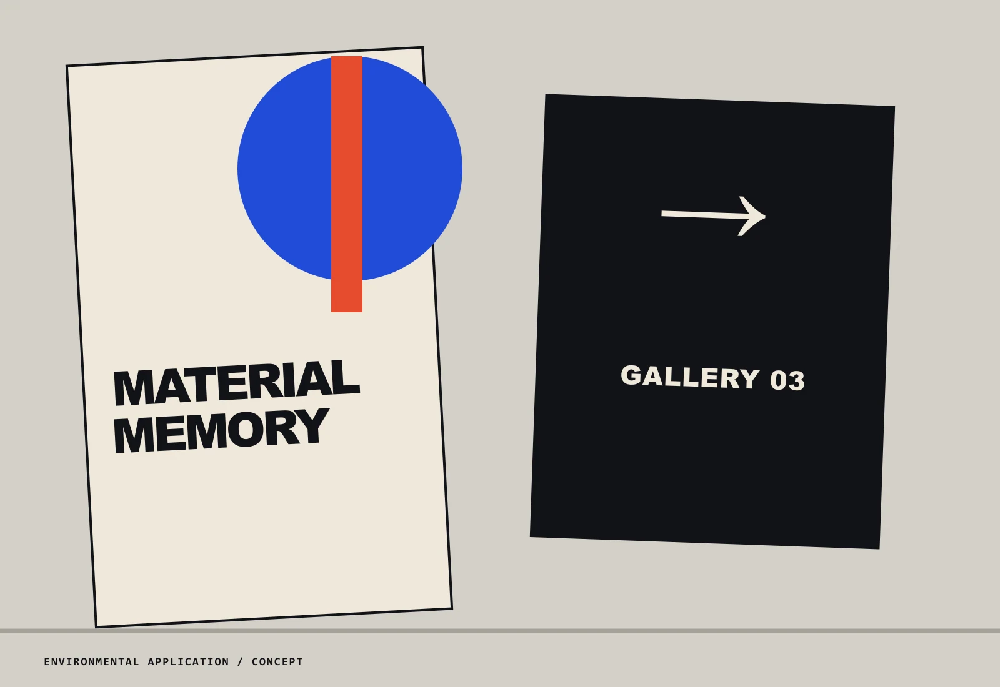

Typography
Compressed display typography paired with modest serif annotation and mono cataloguing.
Self-initiated fictional exhibition / 2026
One circle. An entire exhibition.
Cultural identity / Exhibition / Environmental
View 4 applications ↓
The communication problem
Audience & direction
Museum visitors, material-culture students and people interested in objects as carriers of personal history.
A red vertical incision enters a blue circle, suggesting a hand, a seam and a timeline. Warm paper keeps the institution human.
A rebuilt exhibition poster using interruption, crop and material-toned negative space.

A catalogue spread that shifts the original poster grammar into slower reading.

An admission object that reduces the poster to its most durable recognition elements.

An environmental application that gives the exhibition graphics weight, angle and wayfinding duty.
Typography
Compressed display typography paired with modest serif annotation and mono cataloguing.
Colour
Ultramarine, vermilion, archive cream and gallery black.
Composition
The circle-and-line mark changes scale but never proportion; catalog pages use museum-like breathing room.
Image making
Geometric symbols, object labels, ticket coding and tactile paper simulation.
Mixture formula
Selected alternate / Rejected direction
A photograph-led route made the exhibition feel like a product catalogue. The abstract mark leaves room for many kinds of memory and gives the full system one durable anchor.
AI production disclosure
All marks, copy and layouts were authored for a fictional cultural exhibition. Paper and print effects are digitally simulated.
A new brief starts here.
@akxhiiiiii / Instagram